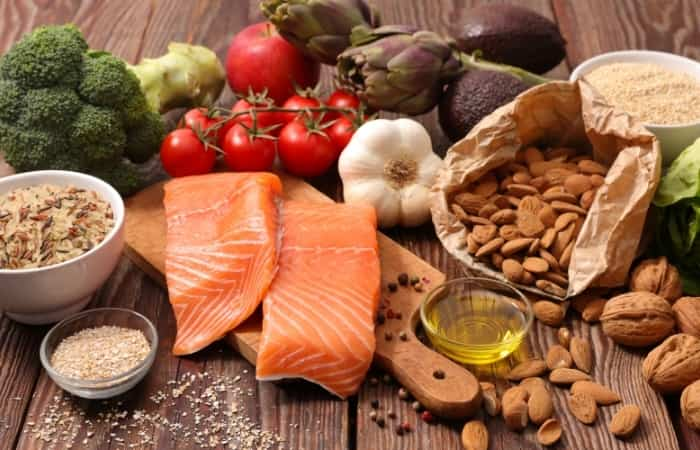
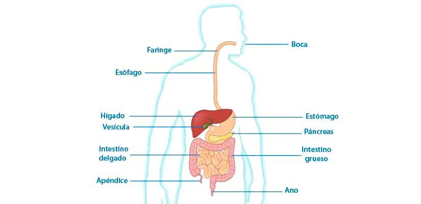
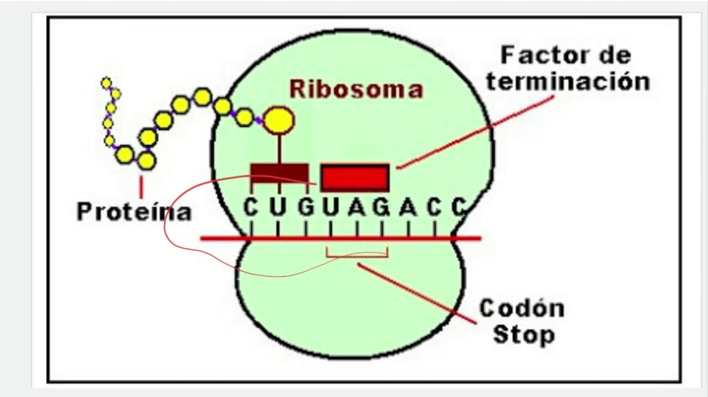

El metabolismo de los seres vivos es el conjunto de transformaciones químicas y físicas
mediante las cuales los organismos aprovechan las materias primas y la energía para
mantenerse y reproducirse. Un organismo vivo lleva a cabo reacciones metabólicas con el
fin de nutrirse, crecer, reproducirse reparar sus células. Cuando un ser vivo no puede
llevar a cabo estas reacciones, muere.
Es mediante la nutrición que un organismo puede llevar a cabo procesos metabólicos,
pero ¿qué es la nutrición?; es el proceso por medio del cual el organismo obtiene de los
alimentos ingeridos los nutrientes que necesita para su optimo funcionamiento.
ALIMENTO: Es toda sustancia sólida o líquida comestible conformada por componentes
químicos llamados nutrientes
NUTRIENTES: componentes químicos que se encuentran contenidos en los alimentos.

Cada alimento aporta cantidades distintas de diferentes nutrimentos, los cuales
desempeñan un papel metabólico en el organismo. Su importancia radica en que
satisfacen las necesidades básicas del cuerpo como:
a): La energía, ya que ésta actúa con motor de las células para que efectúen todas
sus reacciones químicas y diversas de funciones.
b): La construcción de tejidos
c): El equilibrio, dado por múltiples reacciones químicas.
Los nutrientes se dividen en cinco categorías principales, entre proteínas, grasas,
carbohidratos, vitaminas y minerales.
PROTEÍNAS: Son moléculas formadas por cadenas lineales de aminoácidos. Las
proteínas provienen de alimentos de origen animal como carne, leche, huevos y sus
derivados y de origen vegetal como las leguminosas (frijol, soya, lentejas y garbanzo).
*Proteínas estructurales: éstas contribuyen a la construcción de estructuras
celulares, algunas confieren elasticidad y resistencia a órganos y tejidos, un ejemplo
es el colágeno, esta es la proteína más abundante en nuestro cuerpo y componente
esencial de los huesos, ligamentos, tendones, cartílagos y la piel.
*Proteínas Enzimáticas: Actúan como biocatalizadores de las reacciones químicas
del metabolismo celular.
*Proteínas hormonales: algunas son de naturaleza proteica como la insulina y el
glucagón que regulan los niveles de glucosa en la sangre.
*Proteínas de defensa: Brindan protección a los organismos contra agentes
infecciosos, como la inmunoglobina que es un tipo de anticuerpo, está implicada en la
alergia y en la respuesta inmune efectiva contra diversos agentes patógenos.
*Proteínas de transporte: Son proteínas que sirven para el transporte de sustancias
como la hemoglobina, proteína presente en los glóbulos rojos que transportan
oxígeno.
*Proteínas de función contráctil: éstas ayudan a realizar los movimientos de los
músculos con la miosina y la actina.
GRASAS: Las grasas se encuentran en los aceites, ciertos vegetales y algunas
semillas como el cacahuate, girasol, y el ajonjolí. Sirven de reserva energética y no se
deben comer en abundancia pues el exceso conlleva al sobre peso.
CARBOHIDRATOS: Proporcionan energía y se encuentran principalmente en
cereales como maíz, arroz, avena y trigo. Y en tubérculos como la papa, el camote, y
la yuca. Los carbohidratos son azúcares entre estos se encuentran la glucosa,
fructosa, lactosa, sacarosa, almidón, glucógeno, y celulosa en plantas.

VITAMINAS Y MINERALES: Se encuentran en las verduras y en las frutas; permiten
mantener un crecimiento y desarrollo saludables, y ayudan a prevenir
enfermedades.
Los nutrientes antes mencionados deben ser obtenidos por el organismo mediante
el proceso de digestión, este es el proceso mediante el cual los alimentos son
degradados y reducidos hasta llegar a ser unas pequeñas partículas que puedan ser
absorbidas por las células del cuerpo, este proceso se lleva a cabo en al aparato
digestivo.
es decir se comenzarán a degradar las moléculas
complejas en moléculas simples para que puedan ser absorbidos por el intestino, por
ejemplo las proteínas se simplifican en aminoácidos, el almidón en glucosa y las
grasas en ácidos grasos, luego estos compuestos más sencillos pasan al intestino
delgado a la primera parte de éste, llamada duodeno donde se mezclará con la bilis y
los jugos pancreáticos procedentes del páncreas y con los propios jugos intestinales
formando lo que se llama quilo. La bilis ayuda a disolver las grasas, lo que facilita su
asimilación, mientras el jugo pancreático completa la digestión de proteínas y
azúcares que comenzó en el estomago.
Mediante una serie de movimientos peristálticos el quilo va recorriendo el intestino
delgado y entra en contacto con las vellosidades intestinales, las sustancias nutritivas
atraviesan las paredes de las vellosidades intestinales y se incorporan a la sangre
gracias a pequeños vasos sanguíneos que existen en las paredes del intestino.
Las sustancias que no han sido transformadas ni absorbidas forman los desechos de
la digestión, que pasan directamente al intestino grueso, donde por una serie de
movimientos peristálticos van avanzando hacia el recto. La eliminación de los
desechos se hace por el ano, cuando el organismo nota que en el intestino grueso se
ha acumulado una cantidad excesiva de desechos. Estos desechos al ser eliminados,
se llaman heces fecales.

La nutrición comprende dos procesos metabólicos, anabolismo y catabolismo.
Anabolismo: Es un conjunto de reacciones por las que las célula sintetiza todos los
materiales que requiere para hacer sus funciones. En resumen es sintetizar moléculas
más complejas a partir de moléculas más simples. La síntesis de proteínas es un ejemplo
de anabolismo.
Catabolismo: conjunto de reacciones por las que una célula degrada moléculas
complejas en moléculas simples para obtener energía necesaria para realizar sus
funciones. Un ejemplo es la asimilación de las grasas mediante la ayuda de sales biliares.
Ahora bien, durante la nutrición, los seres vivos obtienen nutrimentos que posteriormente
se emplean en la síntesis de materiales o para la respiración celular. Mediante la
respiración celular, los organismos degradan biomoléculas y liberan energía requerida y
así poder llevar a cabo las diferentes actividades celulares, tales como el crecimiento, la
reparación, el mantenimiento celular, etc.
Integrantes
Gabriel Omar Aké Simá
Cesar Antonio Ucan Tucuch
Oswaldo Nathael Dzib Poot
Abdiel Aziel Estrella Caamal
Jose Julian Moo Tun